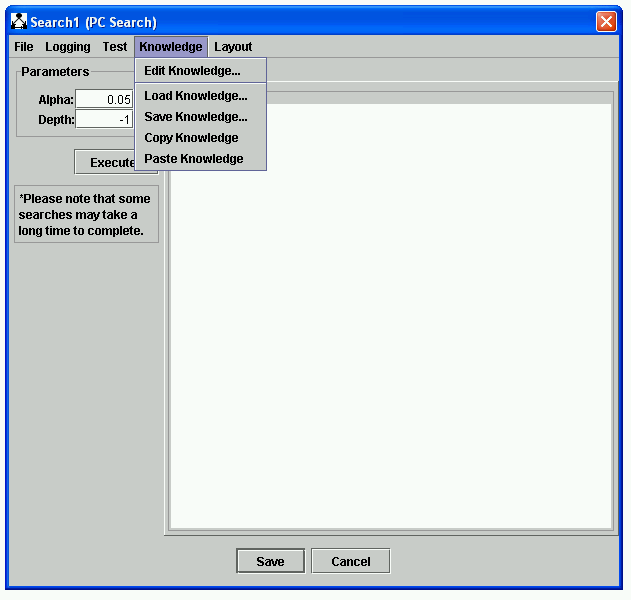
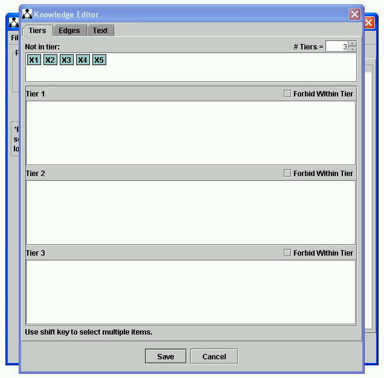
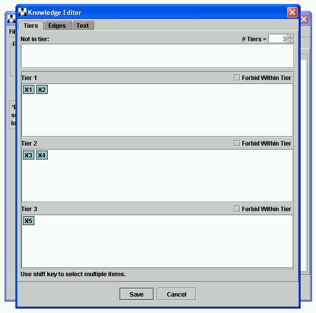
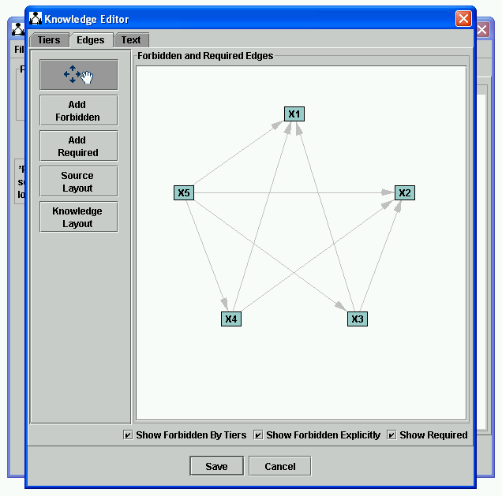
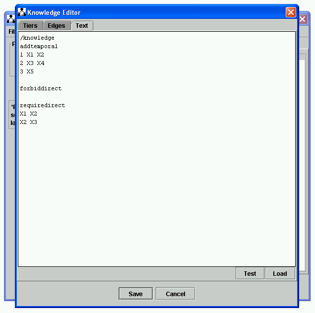

Editing Knowledge |
Background knowledge (or "knowledge" for short) is a set of specifiable constraints used in a variety of searches that can be associated either with search objects or, for convenience sake, with data objects. Background knowledge can be used by search procedures to narrow down the search and return a more informative output is making use of background knowledge provided by the user. There are three main types of background knowledge that can be used by Tetrad:
Tools for manipulating knowledge are located in the Knowledge menu of components that are associated with background knowledge. Consider a PC search over variables X1, X2, X3, X4, and X5. The search editor will be initially blank, like so, and will have a Knowledge menu with several tools in it:

If you select "Edit Knowledge," you will se an editor that looks like this:
]
There are three tabs--the "Tiers" tab (showing), the "Edges" tab, and the "Text" tab. The "Tiers" tab let you specify temporal tiers; you simply drag and drop the variables in the tiers you want, increasing or decreasing the number of tabs as needed. If V1 is in tier m and V2 is in tier n, where m < n, then the edge V2-->V1 will be forbidden. Let's say you drag X1 and X2 to Tier 1, drag X3 and X4 to Tier 2, and drag X5 to Tier 3:

To see the specific edges that are forbidden by this specification of tiers, click on "Edges":

The edges shown in gray are forbidden. You may add required edges to this view by clicking "Add Required," clicking on the "from" node for the edge you want to add, and dragging to the "to" node. Here is the same knowledge with two required edges added (shown in green):
Finally, you may view the edited knowledge in a format consistent with Tetrad 3 by clicking on Text:

If you click "Save," this knowledge will be saved and used in the next search.
If you select "Save Knowledge" from the Knowledge menu, you will be able to save knowledge out to a file in the form shown in the "Text" tab, above. If you select "Load Knowledge," you will be able to load knowledge from a file in the form shown in the "Text" tab, above.
The remaining items in the Knowledge menu are used to help ove knowledge from one box to another.
The remaining items in the Knowledge menu are used to help move knowledge around from component to component. If you select "Copy Knowledge," the current knowledge will be copied to the system clipboard. If you select paste knowledge, the knowledge stored on the clipboard will be copied into the current box.
Knowledge is used when searches are done to forbid or required edges. Forbidden edges are not permitted to appear in the final graph; required edges must appear in the final graph. How this is accomplished varies from algorithm to algorithm; to see how it's done in a specific algorithm, see the manual page for that algorithm.
Temporal tiers provide a mechanism to forbid edges systematically in layered groups. Edges from any later tier to any earlier tier are forbidden. This provides a convenient way to give knowledge about temporal ordering to a search algorithm. The above knowledge would be sensible to provide if, for example, we knew that X1 and X2 preceded X3 and X4, and X3 and X4 peceded X5. By simply placing the variables in these tiers, all of the necessary forbidden edges are generated automatically. Variables in the box marked "Not in tier" do not carry any temporal constraint with respect to any other variable.